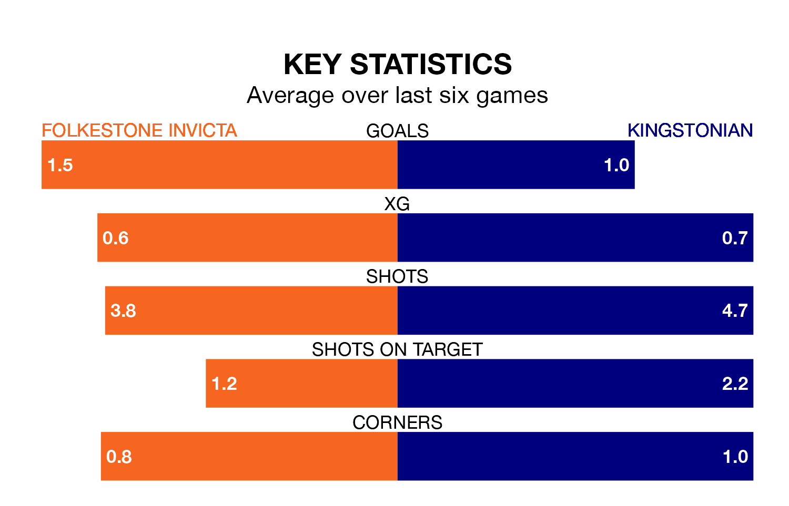

Kingstonian travel to Folkestone Invicta on Saturday in the Isthmian Premier Division.
The visitors come into the game on the back of a defeat in their last match, having lost to Horsham 3-1 away.
Folkestone Invicta, meanwhile, drew their last match, 0-0 against Potters Bar Town.
Kingstonian are bottom of the table after 31 games, of which they have won four and drawn six, earning 18 points.
Folkestone Invicta are five places ahead of the visitors in 17th, with eight wins and nine draws putting them on 33 points.
In the last 10 years, Folkestone Invicta and Kingstonian have played each other on 12 occasions. Folkestone Invicta won five of them, Kingstonian four, and they drew three times.
On average, Folkestone Invicta scored 1.8 goals and Kingstonian 1.6 in those matches.
Their last meeting was on October 21, when Kingstonian won 3-0 at home.
The home team are in disappointing form in the Isthmian Premier Division, with one win and three draws from their last six games.
With a win and two draws over that period, Kingstonian's form is slightly worse – they have taken five points from 18, compared to Folkestone Invicta's six.
With 42 goals in 31 games so far this season, Folkestone Invicta are scoring at below the league average rate with 1.4 goals per game. And they are conceding more than average, letting in 52 goals at a rate of 1.7 per game.
Kingstonian are also below average scorers, with 1.4 goals per game, compared to a league average of 1.6. They have conceded 2.1 goals per game.
Updated: 09:34 (UTC), 08/03/24